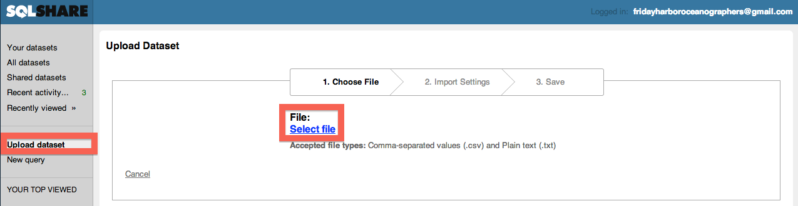
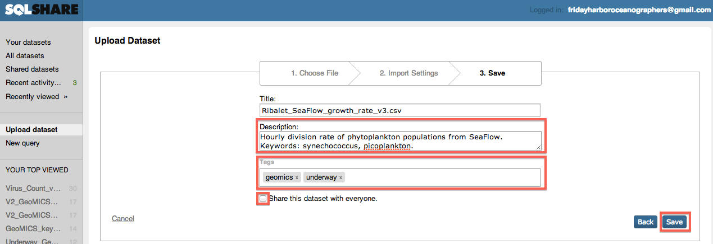
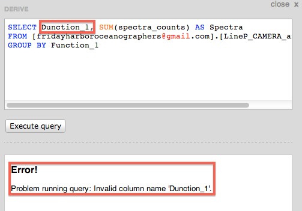

FridayHarborOceanographers@gmail.com username and with the password that Ginger sent you.
FridayHarborOceanographers@gmail.com username and with the password that Ginger sent you.If the dataset you want to process is not already in SQLShare, you need to upload it.
Save as or Download link as.[ ] and math symbols: + - %.GeoMICS_data.csv to something descriptive and identifying (and unique), for example Ribalet_SeaFlow_growth_rate_v3.csv.Upload dataset button on the left side of the page.Select File and choose the renamed CSV file which contains your data (Ribalet_SeaFlow_growth_rate_v3.csv in our example). Next at the bottom right.iron, DOC, nutrients, protein, etc.geomics so that this dataset is part of the geomics collection on SQLShare. Please also choose one of: organic, inorganic, omics, and underway. You can also add keywords as tags as you feel appropriate.Save at the bottom right. The easiest way to find datasets in SQLShare is through the keyword search at the top right, labeled Filter by keyword. Note that this search will search in: the filename, the description, and the tags -- which is why you should choose these carefully when uploading data. 
If you want to get back to the "home page" in SQLShare, simply click the Your datasets link at the top left of the page.
Here is a list of example analyses conducted using the GeoMICS datasets in SQLShare. We hope that these will serve as templates that you can use to write your own queries.
Bob Morris uploaded datasets that analyzed protein expression in the surface water at the -omics stations. You can see these data by viewing the dataset here: [fridayharboroceanographers@gmail.com].[LineP_CAMERA_annotation]. You could also find this dataset by searching for protein or CAMERA as described above.
Suppose that we want to find the most commonly expressed protein functions. In Bob's dataset, the spectra_counts column indicates the number of times each protein was found, and the Function_1 column indicates the most popular function attributed to those proteins.
To describe the computation in English: For each unique function (from the Function_1 column), we want to add up the corresponding spectra counts (spectra_counts). The SQL translation of this query is as follows:
SELECT Function_1, SUM(spectra_counts) AS Spectra
FROM [fridayharboroceanographers@gmail.com].[LineP_CAMERA_annotation]
GROUP BY Function_1
The GROUP BY Function_1 part of this query says that for each unique value of Function_1, SQLShare will create a new group of measurements. Within each group, the SUM(spectra_counts) AS Spectra shows that we will add up all the spectra counts within each group, and name the resulting sum Spectra. Finally, the FROM part of the query identifies which dataset this query will analyze.
Derive dataset button.DERIVE panel, and click Execute query.
Function_1 column name.

You may want to sort the values in the dataset differently, e.g., to find the most abundant protein functions first. You can sort the output using the ORDER BY statement, e.g., ORDER BY Spectra DESC. Here, DESC means "in descending order"; you can also use ASC for ascending order. Here is the final SQL query:
SELECT Function_1, SUM(spectra_counts) AS Spectra
FROM [fridayharboroceanographers@gmail.com].[LineP_CAMERA_annotation]
GROUP BY Function_1
ORDER BY Spectra DESC

Create new dataset to save this result. As before, please give the new dataset an informative Name, Description, and Tags. Always include the geomics tag. Then you can save the result and a new dataset will be created. You can see the result by clicking here.A common task (and indeed, one of the big features of SQLShare!) is merging data in different datasets together. Here is an example task from Jagruti Vedamati: I want to look at O2 data along with the total dissolved and particulate metals.
Filter dataset by keyword box described earlier, search for O2 (to find the oxygen data) and metals (to find the metals data), and inspect the resulting datasets. Note that these searches work because these datasets have well-chosen names, descriptions, and tags. You should find:
Station and Depth, or Event when these are not available.The SQL command to merge datasets is called JOIN. It can be used as follows:
SELECT *
FROM [fridayharboroceanographers@gmail.com].[V2_GEOMICS_Fe-Cu-Mn-Zn-Vedamati.csv] metals
JOIN [fridayharboroceanographers@gmail.com].[V2_O2_measurements_final.csv] oxygen
ON (metals.[Station] = oxygen.[station]
AND metals.[Depth..m.] = oxygen.[Depth])
Function_1 and Spectra). In this example, SELECT * means select all columns in both datasets.metals and oxygen in this example) so that we don't have to type the full [fridayharboroceanographers@gmail.com].[long_dataset_name] every time.JOIN datasets ON a particular condition. In other words, we take the pairs of rows (one from the metals dataset and one from the oxygen dataset) where the ON condition is true.
metals.[Station] = oxygen.[station]) and Depth (metals.[Depth..m.] = oxygen.[Depth]).ABS(metals.[Depth..m.] - oxygen.[Depth]) <= 5You can see the joined Oxygen and Metals dataset here: [fridayharboroceanographers@gmail.com].[Metals_and_Oxygen].
We will fill this in as the questions come.
Please mail Daniel Halperin <dhalperi@escience.washington.edu> when you have issues or successes! :)